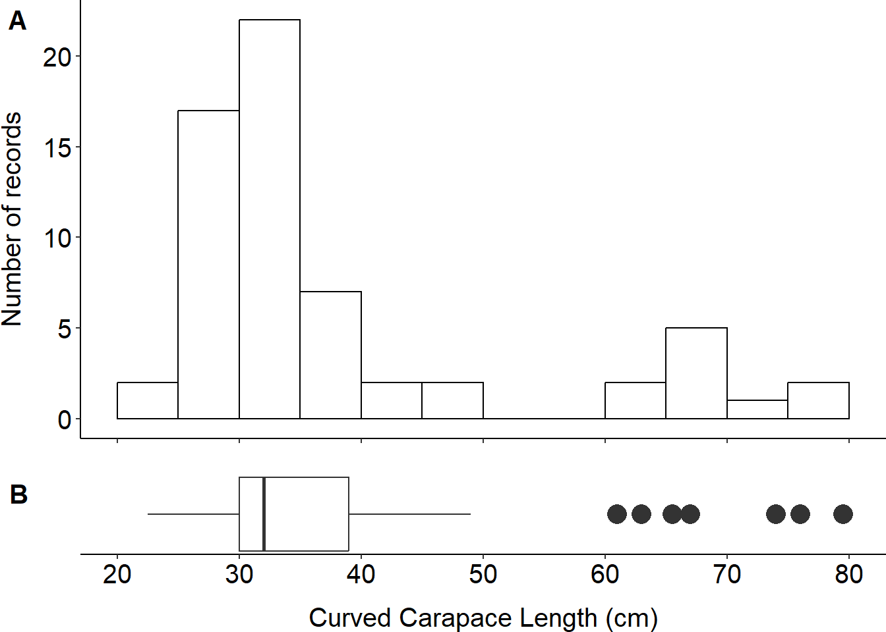

The One on how I was writing my first scientific paper
When you have two records of a rare species and have to figure out how to publish them
code
analysis
research
Author
Matic Jančič
Published
February 8, 2023
How we got the records of the rare species
So, if you read the About pages, you might already know that I was working on board of fishing vessels for three summer seasons. And with many fisherman, the after work-routine is to have a drink when you’re done. Once, I was sitting with one of them, when he started to explain, that one of the sea turtles he caught was very different from others. He looked for the photo on his phone and it was obvious that we’re not talking about the loggerhead sea turtle Caretta caretta, which is a common species in the area, but rather about the green sea turtle Chelonia mydas (left on the photo), which is rarely seen in the Northern Adriatic Sea. The second record came a couple of months later, when I got a call from another fisherman at 5:30. He told me there was a weird turtle with a completely white plastron (belly, underside) in his nets and sent me a couple of photos (fourth in the photo, in the hand of the fisherman).
Photo credits left to right: M. Ossich; A. Žuljević; M. Schoonderwoerd; D. Jugovac; P. Salvemini.
How I was writing my first paper
These two photos were the starting point for writing my first scientific paper, back at the end of 2019. The idea was first to just publish these two new records, which were accompanied by several more from our Italian and Croatian colleagues. We also found one record in Albania supported by a good quality photo on GBIF, which came as a nice surprise. So I prepared something that resembled a manuscript, sent it to my supervisor and … didn’t hear from him for the next 12 months.
After that time, I got back to the manuscript, searched the web and found a bunch of reports, which included information on sightings of the green sea turtle in the Adriatic Sea. After some discussion, this changed the narrative of the article and we refocused the paper not just on new sightings, but why there seem to be many more sightings since the year 2000, compared to the period before. We now had 8 new, unreported sightings, and roughly 65 reported. This also enabled us to analyse the sizes and temporal distribution of animals that were observed in the Adriatic Sea. For the sake of the publication, the plots were done in a more traditional, standard, black and white (code at the end with all the “polishing details”). My friend Manja drew a very nice sketch of the green turtle head that we added to the empty space of the plot (you can find more of her art here). For this post, I decided to use a simply plotly histogram in which I only changed the color of the bars to match the header of my webpage:
Based on the data we had acquired and analysed it seems that the number of green sea turtle observations in the Adriatic Sea increased more than tenfold between 2000 - 2020, and will likely continue to increase. We attributed this intriguing increase to:
the increase of the Mediterranean green sea turtle population,
the increased capacity of institutes, universities and NGOs around the Adriatic, resulting in higher awareness of sea turtles in the region and lastly,
climate change - warming seas seem to be shifting the Adriatic to be more favourable for green turtles (and they can find many areas with food sources they need).
Two most notable areas where green turtles were most commonly observed were coasts of Albania and southern Italy. Again, there is a more traditional map in the paper, but below you can find the same data visualized using leaflet. You will note that there are two big red circles (recent observations) with the same label in Drini Bay - they simply represent the data divided in two smaller compartments (2003 - 2010 and 2011 - 2018).
We finally managed to publish this article in December 2022. From a relatively easy thing, to publish a couple of new observations of a rare species, this paper turned out to be a quite big review of what we know about green sea turtles in the Adriatic. For me, it was also a steep learning curve on scientific writing. When I look in the folder with my “version controlled” manuscripts (there are at least 30), I started as a complete rookie and now feel way better equipped to tackle my three paper PhD dissertation. For those interested in more information about our paper, you can find it and download it here.
Bonus: how did I make and combine the histogram and boxplot for the paper?
I added useful comments to the code bellow that describe what a particular line does. I used ggplot2 to create both graphs and polish them mostly within the theme() function. The major adaptations were removing axis labels, titles and ticks, so they are not duplicated. Also, I reduced white space around both plots with plot.margin =. Lastly, I found it most convenient to use the plot_grid() function from cowplot package to arrange the two plots according to my preferences.
Show the code
library(ggplot2)# define size classes in 5 cm interval, tickmarks in 10 cm interval and x axis limitsbreaks <-seq(20, 80, by =5)tick_marks <-seq(20, 80, by =10)limits <-c(20, 80)greens_histogram <-ggplot(greens, aes(x = CCL)) +geom_histogram(breaks = breaks, color ="black", fill ="white") +scale_x_continuous(name ="", # remove axis namelimits = limits, # set the x limit, same as for boxplotbreaks = tick_marks) +# set the breaks, same as for boxplotylab("Number of records") +theme_classic() +# remove a lot of unnecesary noisetheme(axis.text =element_text(size =15, # font size and color of the axiscolour ="black"), # labels (numbers) axis.title =element_text(size =15), # font size of the axis titleaxis.title.y =element_text(margin =margin(r =10)), # move axis title away from the labels plot.margin =unit(c(0, 0, 0, 0), "cm"), # reduce margin around the plot, so there is less white space when adding boxplotaxis.text.x =element_blank()) # remove labels of x axis, as they will be the same in boxplot greens_boxplot <-ggplot(greens, aes(y = CCL)) +geom_boxplot(outlier.size =5) +# increase the size of outlier points, so they are better visiblecoord_flip() +# flip the boxplot so it is horizontalxlab("") +theme_classic() +theme(axis.text.y =element_blank(), # removes y axis labels axis.ticks.y =element_blank(), # removes y axis ticksaxis.line.y =element_blank(), # removes y axis lineaxis.text =element_text(size =15, color ="black"), # same as aboveaxis.title =element_text(size =15), # same as aboveaxis.title.x =element_text(margin =margin(t =10)), # same as above, only on x axisplot.margin =unit(c(0, 0, 0, 0), "cm")) +# same as above# we are still manipulating y axis, even though we flipped the boxplotscale_y_continuous(name ="Curved Carapace Length (cm)", # rename y axislimits = limits, # same as abovebreaks = tick_marks) # same as abovelibrary(cowplot)plot_grid(greens_histogram, # histogram on top greens_boxplot, # boxplot belowncol =1, # plots in one columnalign ="v", # vertical alignment#axis = "lr", # axis alligned left to rightrel_heights =c(3, 1), # hist three times bigger than boxplotlabels ="AUTO", # with automatic labelslabel_size =15) # of font size 15

This last part of the code was not executed in this post, but demonstrates how to add a random image to your plots. If your image is in .png use readPNG() function to load it into R. Then add it to your plot using draw_image from cowplot. You will have to play around with the placement, the numbers in the example below suit our histogram with a lot of blank space top right.
Show the code
library(png) # readPNGartwork <-readPNG("image_you_want_to_insert.png")greens_histogram + cowplot::draw_image( artwork, x =60, y =10, # x & y coordinates, where to insert the imagewidth =25, height =12.5# size of the image on the plot )